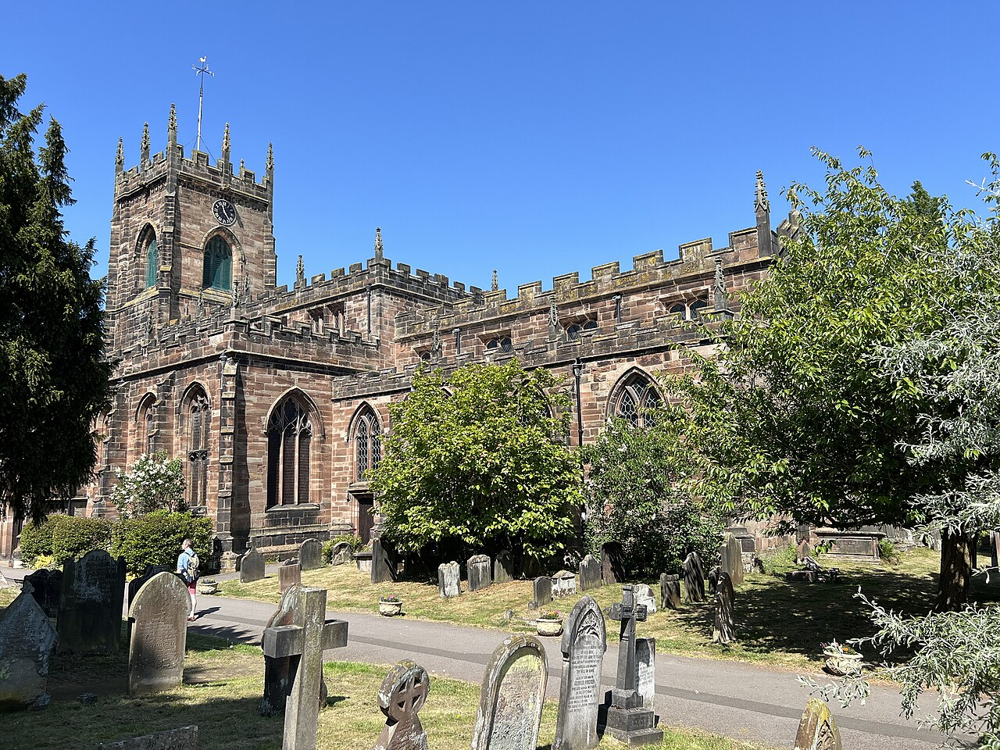
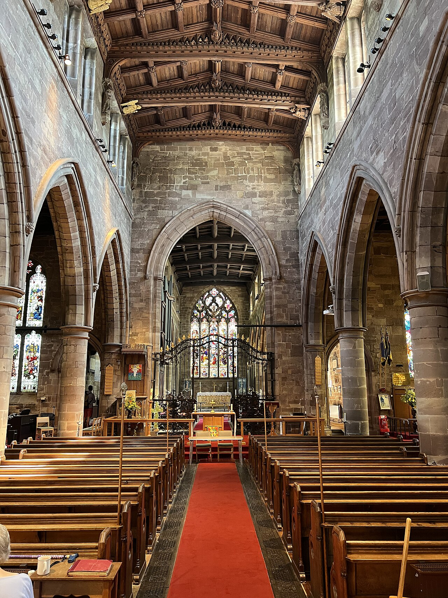
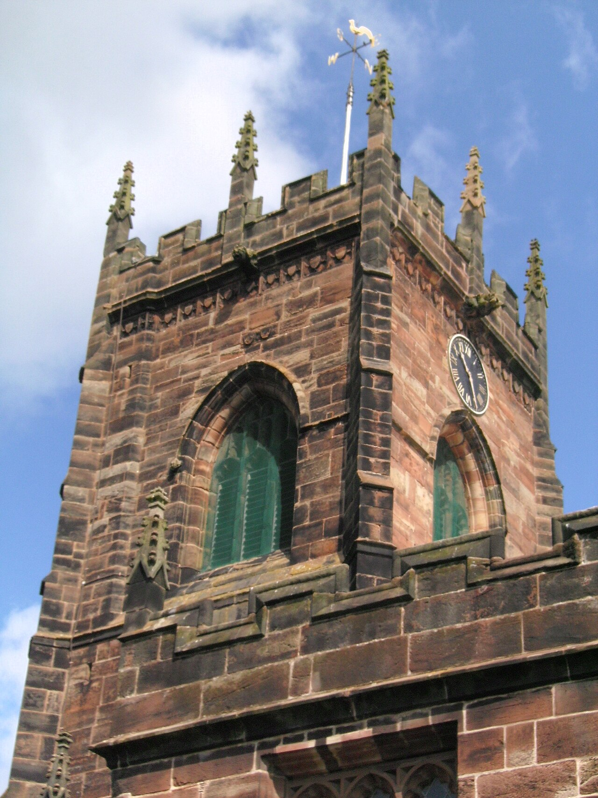
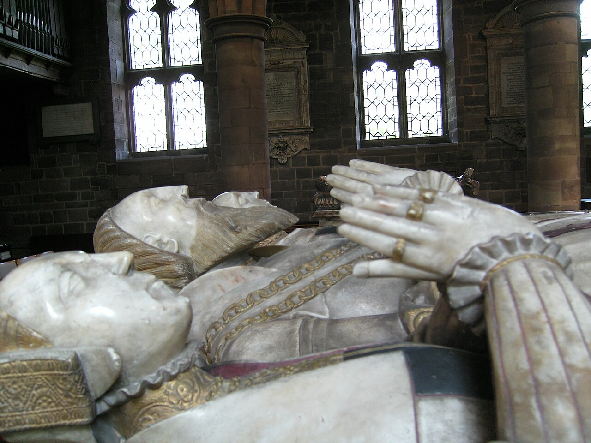
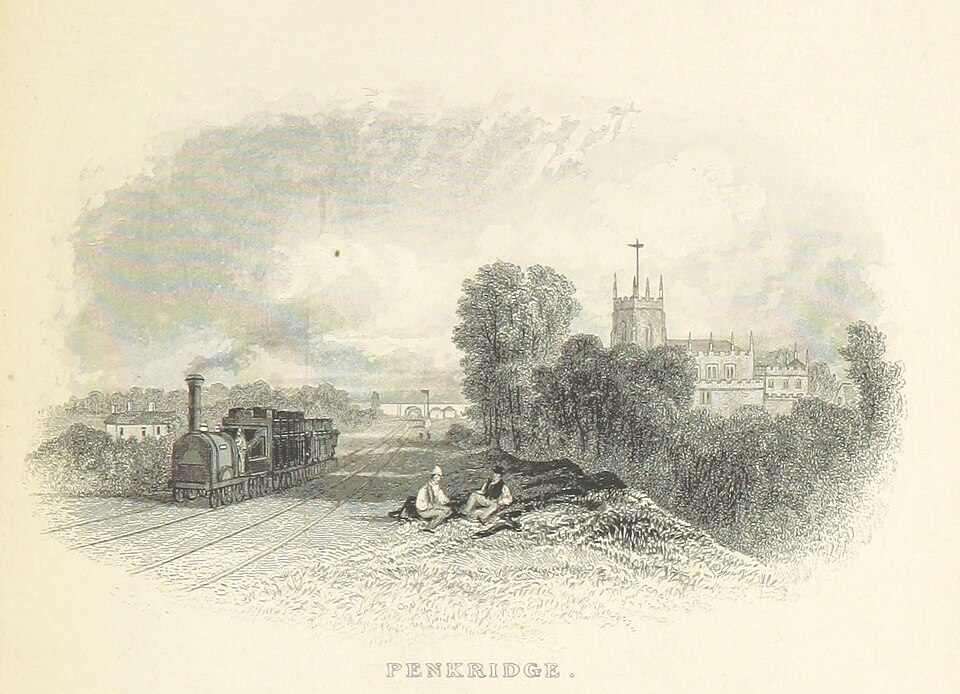

History of St Michael's
A royal chapel for more than a thousand years, a church begun in 1226 by an Archbishop of Dublin, and still the parish church for Penkridge and Stretton.


A royal chapel
There has been a church at Penkridge for more than a thousand years. Tradition says it was founded as a royal chapel by King Eadred, who reigned from 946 to 955, or by his nephew King Edgar.
By the time of the Domesday Book in 1086 it was served by nine clerks, priests who lived and worshipped together and were supported by land from the Crown. A church served by a community of priests is called a collegiate church, and as a royal chapel St Michael's answered to the king rather than to the local bishop.

The Archbishops of Dublin
In 1215, three months after Magna Carta, King John made Henry de Loundres, Archbishop of Dublin, and every archbishop after him Dean of Penkridge, and gave them the manor.
In 1226 Henry made himself dean, came to live in Penkridge, pulled down the old Saxon minster and began the church that stands today. In 1259 the Pope joined the two offices for good, so for the rest of the Middle Ages the Archbishop of Dublin was also the Dean of Penkridge.

Built in red sandstone
The church grew over three centuries. The nave arcades are from about 1250. The tower and the two-storey south porch were begun in the 1300s, and the great east window opening, with its flowing tracery, dates from about 1340.
In the 1500s the builders added the clerestory windows high in the nave and chancel, finished the upper stages of the tower and gave the outside much of the look it has today. The choir stalls, with their carved misericords, are from the late 1400s.

The Littletons
The college of priests came to an end at the Reformation. In 1548 its estates were granted to John Dudley, Earl of Warwick, but the leases stayed with the Littleton family, who kept the college and chose the clergy for generations after.
Their tombs fill the chancel. Sir Edward Littleton, who died in 1558, lies in alabaster between his two wives, Helen and Isabel, and his son Sir Edward, who died in 1574, lies beside his wife Alice. Both tombs are thought to be the work of the Royley family of Burton. The family were patrons of the church until 1990.

Restored and still in use
The font is dated 1668. The wrought-iron chancel screen, made in the Netherlands in 1778, was brought to Penkridge from Cape Town. In 1858 St Michael's stopped being a royal peculiar and became an ordinary parish church.
In 1881 the church was restored by J. A. Chatwin of Birmingham. He raised the chancel arch by eight feet and gave the nave a new roof, keeping six oak angels from the 1500s roof. The church has been listed Grade I since 1962, and it is still the parish church for Penkridge and Stretton.

Key dates
Saxon and medieval
- 900sA royal chapel at Penkridge, said to be founded by King Eadred or King Edgar
- 1086Domesday Book records nine clerks
- 1215King John makes the Archbishops of Dublin deans of Penkridge
- 1226Henry de Loundres begins the present church
- c. 1250The nave arcades
- 1300sThe tower and south porch are begun
- c. 1340The east window opening
Tudors to Georgians
- 1500sThe clerestories, the upper tower and the Littleton tombs
- 1548The college ends and its estates pass to the Littletons
- 1668The font
- 1778The Dutch wrought-iron chancel screen
Victorians to today
- 1858St Michael's becomes an ordinary parish church
- 1864New east window glass by Ward & Hughes
- 1881Restored by J. A. Chatwin
- 1962Listed Grade I
- TodayStill the parish church for Penkridge and Stretton
History from the Historic England list entry and the Revd Patrick Comerford's history of the deanery.
Photographs
The photos drift slowly past and stop when you point at one. Tap a photo to see it full size.
The church and the town
Glass, stone and wood
Tombs and memorials
Photographs from Wikimedia Commons (Geograph and other contributors, Creative Commons licences).